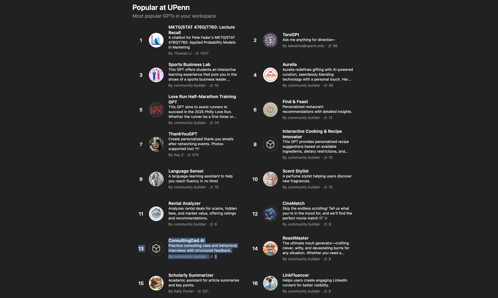

Let’s Explore the Popular at Upenn Section of ChatGPT

I’ve only ever used the chat box of my Upenn ChatGPT account to ask questions to help me study for midterms
Today as I was thinking about what I should experiment with for my 10th blog post (yay!), I decided to explore my UPenn ChatGPT account that was granted to me by my statistics class.
Tell me why I just discovered a whole section called Explore GPTs. Under the Top Picks section, there’s a section called Popular at Upenn. There’s a whole list of popular GPTs in my workspace which include; Love Run Half-Marathon Training GPT, Interactive Cooking & Recipe Innovator, Rental Analyzer, ConsultingDad.AI, and much more. The list seems infinite! And so niche to a lot of people’s different interests. The more I keep looking, the more my jaw keeps dropping. If I knew about these earlier, I think my life would be easier.
I’m curious about some of these…
I want to see if they’re actually useful, or if I could just stick to making my own path in life.
Let’s go in order. I’m excited. Let’s go!
1. TaroGPT
(Ask me anything for direction by kawaima@upenn.edu)
I don’t know what they mean by direction. But after I asked, it seems like a tarot card reading situation. I decided to choose tarot because there was a section on career. As of now, I’m still on the job hunt so I am curious to see how this chat box will read my situation > >
I would say that it’s pretty spot on. I’m pretty sure the creator prompted it with a series of different ones that rotate based on what the user types. Nothing else more to add. Let’s go to the next one.
2. Love Run Half-Marathon Training GPT
(This GPT aims to assist runners to succeed in the 2025 Philly Love Run. Whether the runner be a first-timer or looking to get back in shape, this GPT will help design the perfect training plan factoring in wellness, our busy schedules, and fitness goals. By community builder)
This might be the most helpful thing I need right now. I signed up for the Half-Marthon back in December thinking I could prepare for it March 30th. I got sick for a month and that completely messed up my training plan. It’s now almost two weeks before the half, and I have no clue if I can actually do it. Let’s see if GPT can help me out.
>
Oh well, looks like I’ll be really pushing myself for the next two weeks. I also prompted it to create a calendar version so the information will be easier for me to digest and follow. Look at it below.
🏃‍♂️ 2-Week Half-Marathon Training Plan 🏃‍♀️
Goal: Prepare for the Love Run Half Marathon on March 30, 2025
📆 Week 1 (March 15 - March 22)
| Day | Workout |
|---|---|
| Fri, March 15 | Easy 2-3 miles, slow pace |
| Sat, March 16 | Long run – 6-7 miles at a comfortable pace |
| Sun, March 17 | Rest or cross-train (yoga, swimming, cycling) |
| Mon, March 18 | 3 miles with strides (short bursts of fast running) |
| Tues, March 19 | Rest or easy jog (2 miles) |
| Wed, March 20 | Speed workout – 4 x 400m fast with walk breaks |
| Thurs, March 21 | 4-mile easy run |
| Fri, March 22 | Rest |
| Sat, March 23 | Long run – 8-9 miles |
📆 Week 2 (March 23 - March 29 – Race Week)
| Day | Workout |
|---|---|
| Sun, March 24 | Rest or easy run (3 miles) |
| Mon, March 25 | 3 miles with strides |
| Tues, March 26 | 4-5 miles at a steady pace |
| Wed, March 27 | Rest or cross-train |
| Thurs, March 28 | 2 miles easy with a few fast bursts |
| Fri, March 29 | Rest |
| Sat, March 30 | 🉠Race Day – Love Run Half Marathon! 🉠|
⚡ Race Day Strategy
- Start slow! Don’t go out too
Well shoot! This deviates from the half-marathon training that my friends created for me. I was supposed to take more breaks for the last week leading up to the half, but because I didn’t run enough I guess I have to run more now.
3. CineMatch
(Skip the endless scrolling! Tell us what you’re in the mood for, and we’ll find the perfect movie match 🎬✨ Other Category. by community builder)
I asked
> I like high brow horror. What other movies would you recommend me to watch?
ğŸ Elevated Horror Films You’ll Love
1️⃣ Hereditary (2018)
- 🅠Critics: 90% | Audience: 69%
- 📜 Plot: A slow-burn family tragedy turns into a nightmare as a grieving mother unravels sinister secrets about her ancestry.
- 📺 Streaming: Check Availability
- 🥠Click Here to Watch Trailer
- 🬠Director: Ari Aster
2️⃣ The Witch (2015)
- 🅠Critics: 90% | Audience: 59%
- 📜 Plot: A 17th-century Puritan family, exiled to the wilderness, faces paranoia, isolation, and supernatural forces.
- 📺 Streaming: Check Availability
- 🥠Click Here to Watch Trailer
- 🬠Director: Robert Eggers
3️⃣ Saint Maud (2019)
- 🅠Critics: 93% | Audience: 64%
- 📜 Plot: A pious nurse, haunted by past trauma, spirals into religious fanaticism as she believes she’s been chosen by God.
- 📺 Streaming: Check Availability
- 🥠Click Here to Watch Trailer
- 🬠Director: Rose Glass
4️⃣ The Lighthouse (2019)
- 🅠Critics: 90% | Audience: 72%
- 📜 Plot: Two lighthouse keepers descend into madness as isolation, power struggles, and eerie visions haunt them.
- 📺 Streaming: Check Availability
- 🥠Click Here to Watch Trailer
- 🬠Director: Robert Eggers
5️⃣ Possession (1981)
- 🅠Critics: 86% | Audience: 84%
- 📜 Plot: A woman’s erratic behavior following a breakup reveals a horrifying, supernatural secret.
- 📺 Streaming: Check Availability
- 🥠Click Here to Watch Trailer
- 🬠Director: Andrzej Żuławski
6️⃣ It Follows (2014)
- 🅠Critics: 95% | Audience: 66%
- 📜 Plot: A supernatural entity relentlessly stalks a young woman after a cursed encounter.
- 📺 Streaming: Check Availability
- 🥠Click Here to Watch Trailer
- 🬠Director: David Robert Mitchell
7️⃣ The Wailing (2016)
- 🅠Critics: 99% | Audience: 81%
- 📜 Plot: A rural village in South Korea is plagued by mysterious deaths, and a police officer must uncover whether it’s supernatural or human evil at play.
- 📺 Streaming: Check Availability
- 🥠Click Here to Watch Trailer
- 🬠Director: Na Hong-jin
8️⃣ Under the Skin (2013)
- 🅠Critics: 84% | Audience: 55%
- 📜 Plot: An eerie, hypnotic film where an alien (Scarlett Johansson) preys on lonely men in Scotland, leading to existential horror.
- 📺 Streaming: Check Availability
- 🥠Click Here to Watch Trailer
- 🬠Director: Jonathan Glazer
💡 Would you like recommendations based on a specific subgenre? (e.g., Folk Horror, Psychological Horror, Foreign Horror)